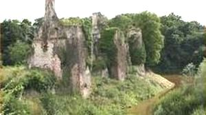
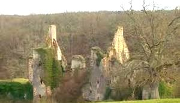
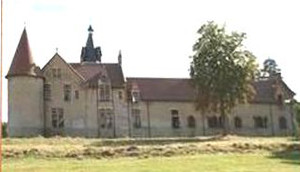
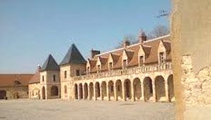
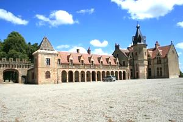
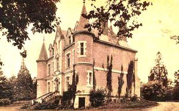
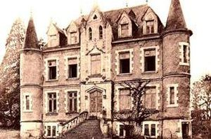
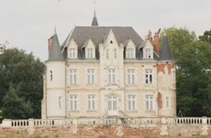
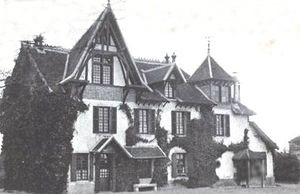

Recensement Jean-Claude Truffet
| Département | 03 — Allier |
| Canton | Herisson |
| Commune | Audes |
| Type d'édifice | Château |
| Période d'origine | XV-XIX |









Deux châteaux à Audes, Crêtes du XV-XIXe siècle et le château de Preuille du XIXe siècle. CRETE, le personnage le plus connu parmi les propriétaires du château est François de Beaucaire de Péguillon, évêque de Metz (1555-1568), qui y est né le 15 avril 1514 et qui y est mort le 14 février 1591. En 1490, Georgette de Culan devenue veuve vend les terres de la Creste et Saint Désiré à Jean de Blanchefort. En 1554, Marie de Créqui épouse de Gilbert de Blanchefort vend les terres de la Creste à Jean de Beaucaire. Celui ci revendit les terres à son frère François en 1558. François Evêque de Metz, fait parti des personnes illustres qui sont nés où ont vécus à la Creste. Il décède en 1591, en léguant ses terres à sa nièce Marie de Beaucaire. A sa mort les biens sont vendues comme biens communaux. En 1820 par succession d'Antoine Lepescheux à sa fille, les terres entrent, pour ce qui en reste après la vente en biens communaux pour certaines le creusement du canal du Berry, dans la famille de Jean-Baptiste Aufrère de Lapreugne, son mari. En 1836, date de son décès, son fils Léonce hérite des terres et du château de La Creste. En 1871, par donation et partage Léonce de Lapreugne et son épouse lèguent le domaine à leur fille Blanche qui a épousé Hildebert de la Celle. Hildebert de la Celle lèguent le château de la Creste et une partie des terres à leur fils Leonce, une autre partie des terres est léguées à leurs petites filles, leurs héritiers les possèdent encore en partie à ce jour. Léonce de la Celle lègue château et terres à son fils Anet. L'ensemble est vendu le 8 juillet 1960.
Crêtes du XVe siècle, on pense que la construction de la première forteresse se situe en 1275 . Elle est édifiée au fond d'un profond ravin et dans une boucle du ruisseau de la Forêt, sur un escarpement rocheux. Une autre enceinte protégeait la basse cour située au dessus du plateau. Ces murailles étaient défendues par des bastions (il en reste des vestiges). Un pont doublé d'un pont levis permettait l'accès à la forteresse, l'édifice était constitué de deux corps de logis en L, flanqués de tours rondes ou carrées et disposés, selon la typologie des châteaux-cours, autour d'une cour fermée par une courtine. L'ancien château, aujourd'hui en ruine, a été habité jusqu'à la Révolution. Dans la basse cour de la vielle forteresse, on construit entre 1895 et 1905 un nouvel édifice de style Renaissance. Il comprend des bâtiments encadrant une cour centrale, avec un porche d'où saillent tours, tourelles et pigeonnier de style néogothique avec fenêtres à meneaux. Dans cette cour on aperçoit une chapelle dont la structure, le clocher, les ouvertures datent de l'origine de la construction au XIVe.
Preuille il existe deux châteaux à Preuille, néo-renaissance . L'un est une maison bourgeoise du XIXe siècle, l'autre une résidence ruinée du milieu de ce même siècle, dont restent deux tours d'angle et une autre en façade. Le château construit au XIXe siècle dans le style néo-renaissance, est un corps de logis rectangulaire à deux niveaux. Le rez-de-chaussée surélevé repose sur des pièces basses. Son accès se fait par un escalier à rampe de pierre. Un niveau de comble peut être utilisé grâce à des lucarnes à linteaux en ogive et colombetes. Deux tourelles à toits coniques élancés flanquent les angles de la façade, alors qu'un avant-corps à fenêtres géminées, arc en accolade et pinacles met en valeur escalier et entrée.
Famille d'Antoine Lepescheux"
Vestiges du château féodal de Crête, et nouveau château de Crête, de Preuille et de Beaufranchet.